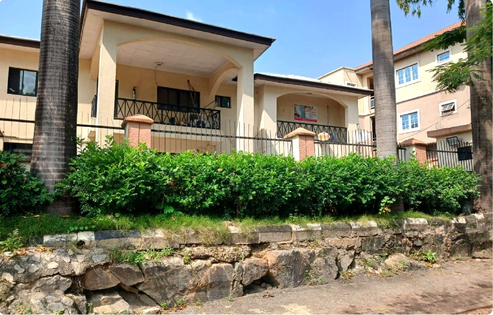
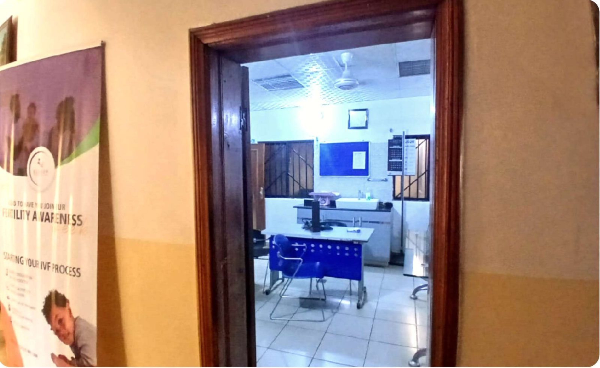
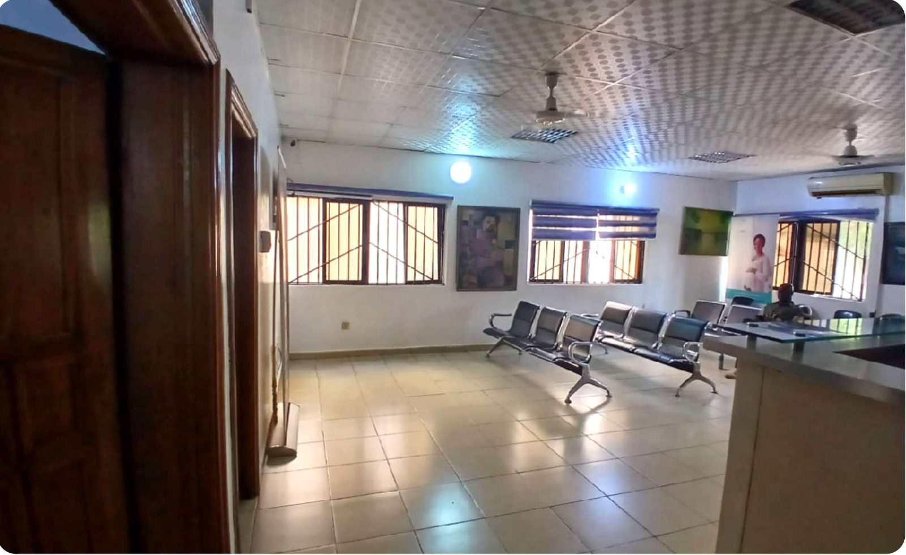
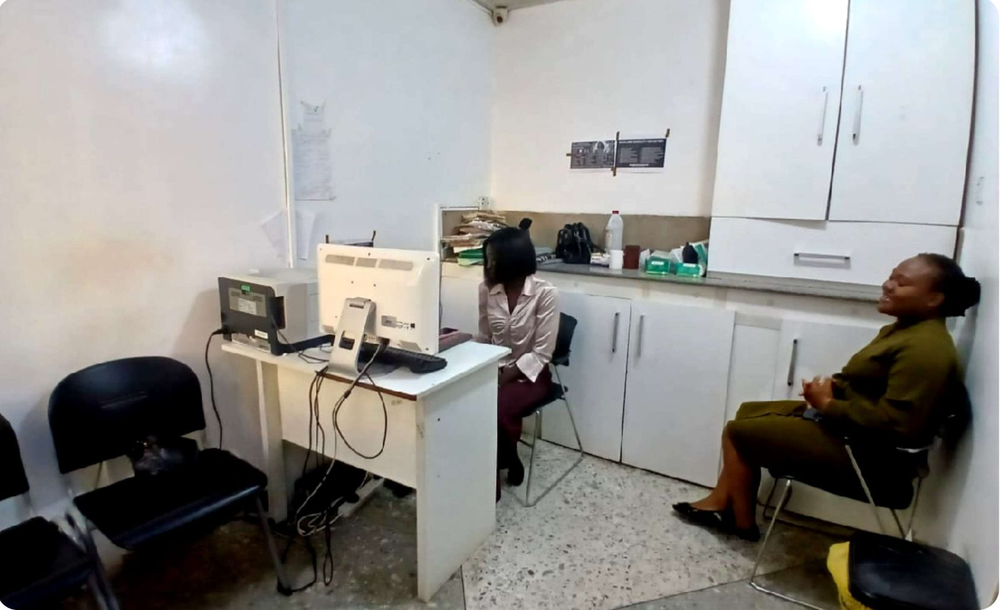
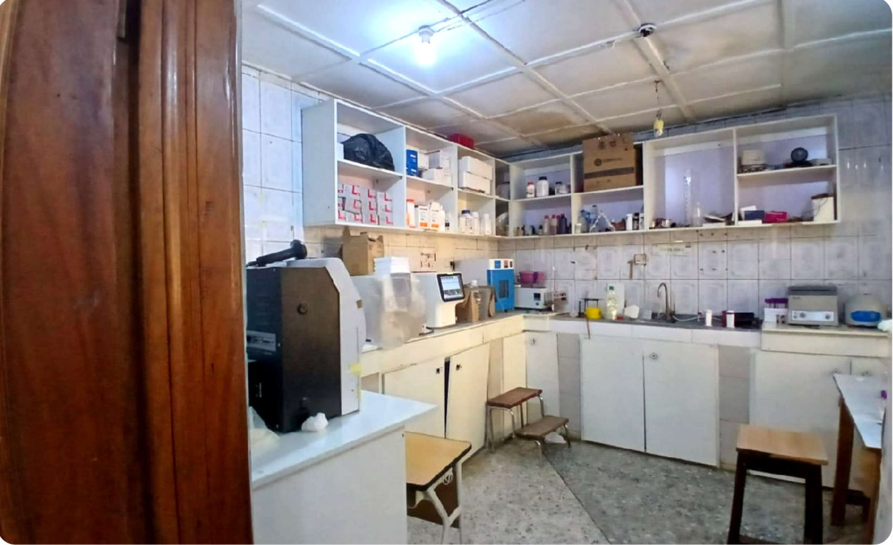
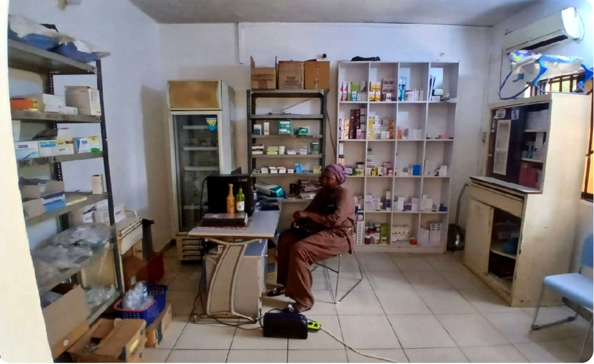

Care you can reach, explained clearly, from people who know your family.
A family hospital with maternity and fertility care at its centre: from planning a pregnancy to the baby's first years, on one site.

What do you need today?
Trying to conceive? Elmaor Fertility Clinic is on the same site.
A family hospital with a maternity and fertility focus.
Rouz Hospital and Maternity Limited is a private hospital in Apo Quarters, Gudu District, Abuja. It provides general hospital care alongside maternity services, and runs Elmaor Fertility Clinic as its specialist fertility and IVF unit.
Antenatal care, delivery, postnatal follow-up, paediatrics and fertility treatment all take place on one site, under one management.


Eight departments on one site.
Tests, scans and medicines happen in the same building as your consultation, so you are not sent elsewhere to start again.

Hope, honest information and support.
Fertility assessment, IVF consultation and treatment cycles, and the Fertility Awareness programme, in a dedicated consulting room. When treatment works, your antenatal care and delivery continue here at Rouz.
Visit Elmaor
Our own rooms and our own staff.




Photographed at Rouz Hospital, Apo Quarters. No stock images.
Who you will see, and when.
The Rouz Weekly.
Health tips, hospital news and updates from the Research & Publications unit, every week.
Read this issue →An in-house unit turning clinical work into published research and patient education, with written patient consent and ethics review before any study begins.
HMOs we accept
Call or WhatsApp to confirm your specific plan before you come in.
Patient quote, used with written consent.
Come in, or call first.
Three ways to reach us.
If you are bleeding heavily, have severe pain or your waters have broken, do not message or book. Call us or come straight in.
Care you can reach, explained clearly, from people who know your family.
Maternity and fertility care at the centre of a family hospital, on one site.
Book an appointment
Mother and baby, on one site from booking to discharge.
A Special Care Baby Unit next to the maternity service, for newborns who need closer observation.
Start antenatal careHope, honest information and support.
Visit ElmaorCome in, or call first.
 Book a consultation
Book a consultation
Hope, honest information and support.
We'll explain each step of assessment and treatment, what it costs, and what the results mean, before you decide anything.
From the first consultation to your baby's first years, one team.
Fertility assessment
Tests for both partners, done in our on-site laboratory and radiology unit.
IVF consultation and cycles
Consultation and treatment cycles, with the process and costs set out in writing.
Fertility Awareness programme
Patient education sessions on fertility, timing and treatment options.
Talk to us privately.
Book a consultation, call, or send a WhatsApp message. Your enquiry stays confidential.
Try next: "build the Maternity page in the style of 1a" · "make the hero in 1a split instead of full-bleed" (Tweaks) · "add a booking form flow"